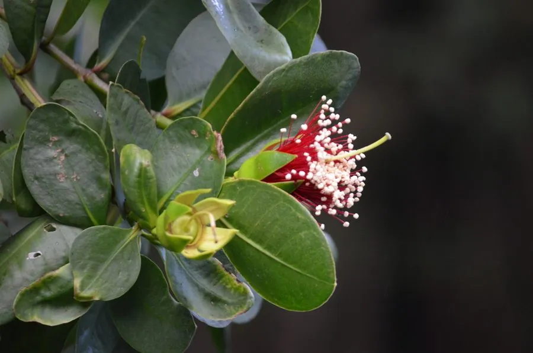

水生植物 · 植物界
海桑 Sonneratia caseolaris

千屈菜科海桑属常绿乔木，红树林树种，具笋状呼吸根，花红色、果实可食，分布于热带海岸滩涂，是护岸固滩植物。
- 分类
- 门被子植物门纲木兰纲目桃金娘目科千屈菜科属海桑属
- 栖息环境
- 热带海岸潮间带泥滩，耐盐、耐淹
- 地理分布
- 东南亚、澳大利亚北部及中国海南、广东沿海
- 保护级别
- 暂无评估
物种志
海桑为千屈菜科海桑属的常绿乔木，高 5–10 米，树皮灰褐色，基部有支柱根和笋状呼吸根伸出泥面。叶片对生，厚革质，椭圆形，长 6–12 厘米，表面深绿色。花大，红色，花瓣线形，雄蕊多数，花期夏季至秋季；果实为浆果，球形，直径 3–5 厘米，成熟时可食。
海桑分布于东南亚、澳大利亚北部和中国海南、广东等地的红树林滩涂，喜温暖、盐渍和潮间带淤泥环境，耐盐、耐淹。它花红色艳丽，果实酸甜可食，是红树林中兼具观赏和食用价值的树种；支柱根和呼吸根能固滩护岸、削弱风浪。栽培以种子和胎生苗繁殖为主，需在潮间带种植；由于围垦和污染，红树林面积下降，应加强保护。
形态与习性
- 株高5–10 米
- 叶片厚革质，椭圆形，对生
- 花期夏季至秋季，花红色
- 果实球形浆果，直径 3–5 厘米，可食
- 根系具支柱根和笋状呼吸根
- 耐盐耐盐、耐淹，生于潮间带
- 繁殖种子、胎生苗繁殖
- 主要用途护岸固滩、果实食用、观赏
趣味知识
- 海桑的果实球形、成熟后酸甜可食，是红树林中少见的果树。
- 它的笋状呼吸根从泥中伸出，帮助在缺氧的淤泥中呼吸。
- 海桑花红色、雄蕊多数，盛开时像一个个红色绒球。